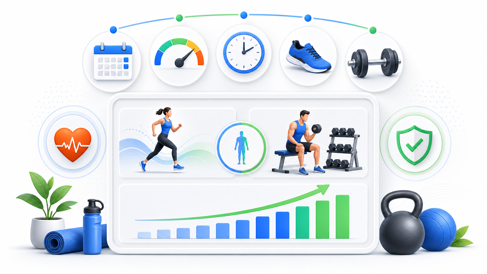

Day 30 · FITT-VP训练变量与ACSM身体活动指南

今天核心是 6 个变量: 频率 F、强度 I、时间 T、类型 T、容量 V、进阶 P。计划不能只写动作名，要写清多久练、练多重或多快、练多久、练什么形式、总量多少、何时加量。
ACSM 是健康底线: 成人每周 ≥150 分钟中等强度或 ≥75 分钟高强度有氧，再加 ≥2 次全身大肌群抗阻。NASM 心率三区让有氧强度从“感觉差不多”变成可追踪目标。
打开 Day30 原学习页 →
今天核心是 6 个变量: 频率 F、强度 I、时间 T、类型 T、容量 V、进阶 P。计划不能只写动作名，要写清多久练、练多重或多快、练多久、练什么形式、总量多少、何时加量。
ACSM 是健康底线: 成人每周 ≥150 分钟中等强度或 ≥75 分钟高强度有氧，再加 ≥2 次全身大肌群抗阻。NASM 心率三区让有氧强度从“感觉差不多”变成可追踪目标。
打开 Day30 原学习页 →


今日新知识 Day30：FITT-VP 六个变量分别是什么？
今日新知识 Day30：ACSM 成人身体活动底线怎么背？
Day29：为什么“练得更累”不等于训练适应？
Day29：渐进性超负荷除了加重量，还能怎么做？
Day27：高力输出为什么不仅靠募集更多运动单位？
Day23：400 米后段腿酸、速度掉，和糖酵解有什么关系？
Day16：为什么同样哑铃重量，肘弯举不同角度感觉难度不同？
串联题：给久坐客户写计划时，Day30 和 Day29 怎么一起用？
| 易错点 | 错因 | 修正句 |
|---|---|---|
| FITT-VP 只要背缩写 | 把处方工具当成英文记忆题。 | 每个变量都要能落到训练计划。 |
| ACSM 指南 = 专项最优计划 | 混淆健康底线和竞技/增肌最佳化。 | 先达健康底线，再按目标调变量。 |
| 强度和容量混用 | 一个说单次有多难，一个说总负荷多少。 | 80%1RM 是强度，3×10×60kg 是容量。 |
| 爆发训练越重越好 | 只看负荷，忽略速度输出。 | 爆发看速度意图和功率，重量压慢就偏离目标。 |
| 人体杠杆只背三类 | 忘记训练难度来自力臂变化。 | 先找支点、力、阻力，再算力矩方向和大小。 |